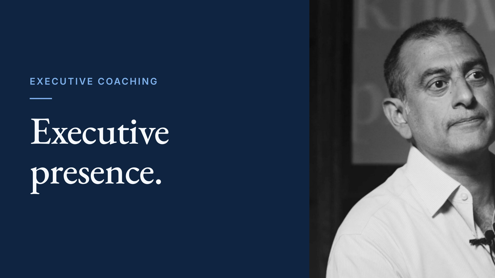
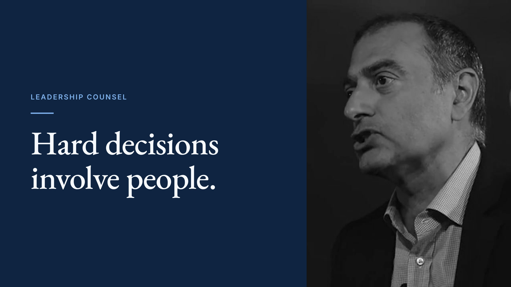
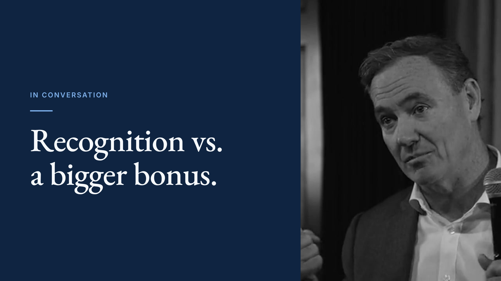
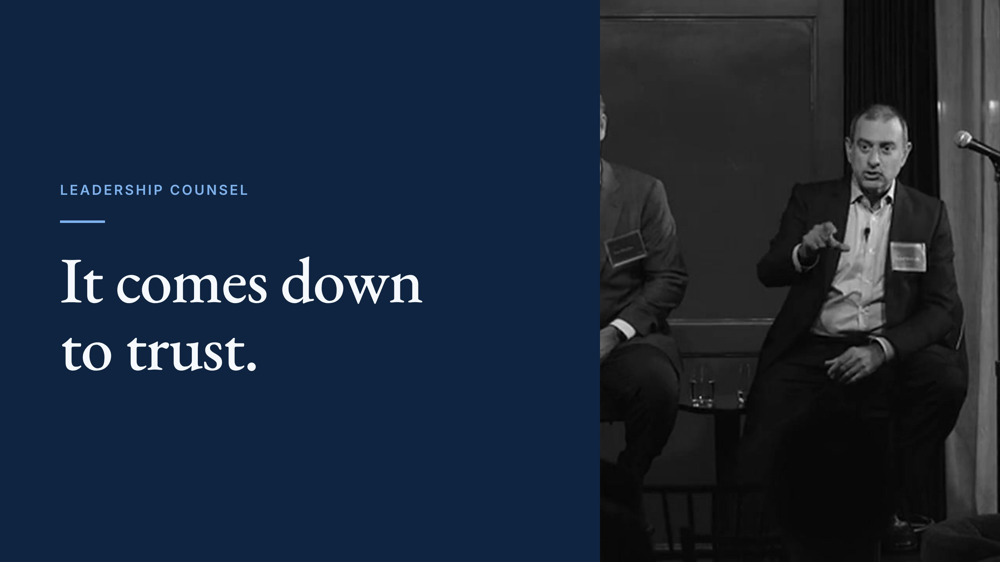
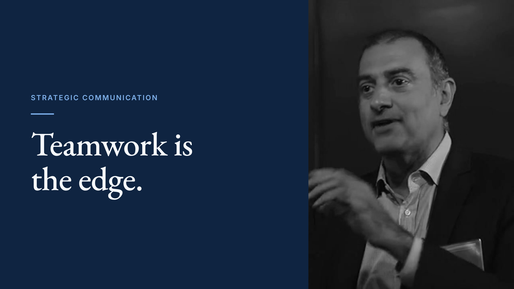
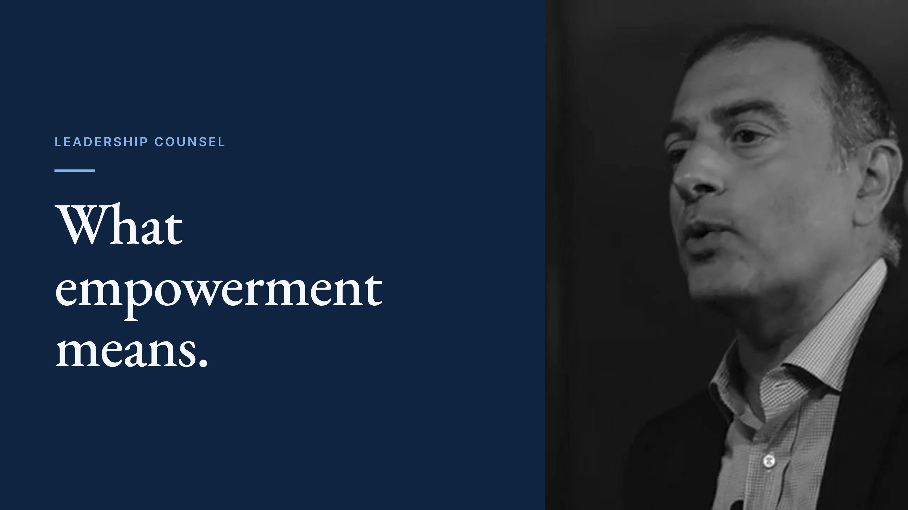
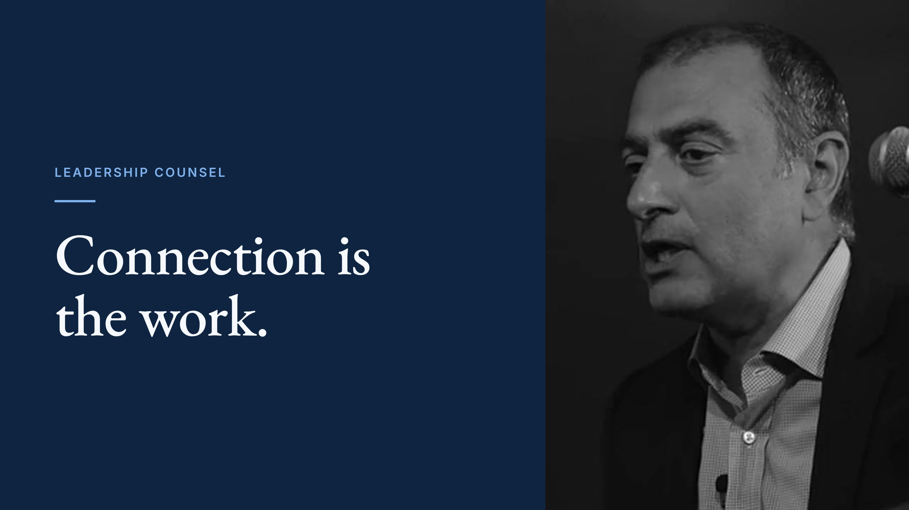

Managing Virtual Impressions: The 5 Cs
What you say is important, but how you come across when you say it matters even more.
Read →At SCL, we pride ourselves on constantly improving our methods and materials. Business changes constantly, and we strive to stay at the forefront of emerging trends to share our expertise with our clients and community.
What you say is important, but how you come across when you say it matters even more.
Read →Things get done by those who execute. But execution has come at the expense of leadership.
Read →One of the hardest things in communication is trying to get others to hear what is being said.
Read →Short videos from SCL. Most come from a conversation on judgment between Farhad Motiwalla and Tim Donahue of Lazard.

Executive presence. How senior leaders show up, speak, and are heard.

Develop, layer, or hire. Three ways to align people with the priorities of a strategy.

Hard decisions involve people. Map who sits in which seat, then have the courage to make the hard decisions.

Recognition vs. a bigger bonus. Pay ranks sixth among the reasons people join a firm and stay.

It comes down to trust. Empowered people start to trust themselves.

Teamwork is the edge. The edge comes from how people work together.

What empowerment means. Give people autonomy in line with their ability and their desire to do the work.

The tough love continuum. Most leadership happens between tough and compassionate. Calibrate by person and situation.

Connection is the work. Technology connects us to information. Leaders still have to connect with people.